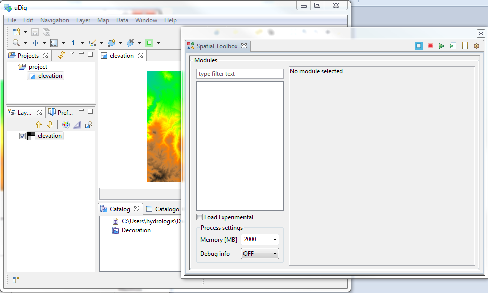
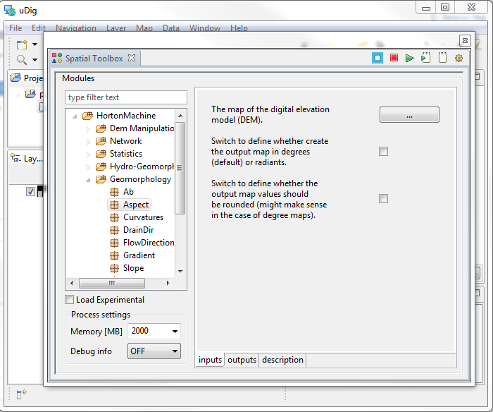
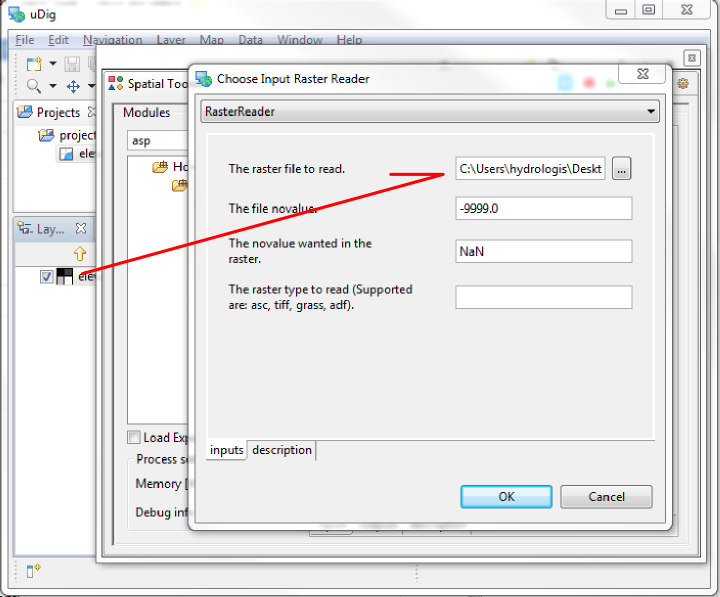
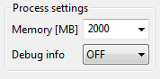
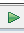

Introduction to the Spatial Toolbox¶
The Spatial Toolbox View gives the possibility to execute tools from loaded libraries on resources visualized in uDig.
Introduction to the Spatial Toolbox
Download the Spearfish example data
Generating Aspect of an Elevation Model
Related reference
This is how it looks like when it is enabled:
Before you Start¶
Download the Spearfish example data¶
In the example we will use a raster elevation model of the Spearfish region.
Download the following file (you can right click and choose Save as in most browsers):
Unzip it to your data directory or desktop
This download contains:
- elevation.asc
- elevation.prj
Try to drag it into uDig and see if it look like the following:

The Spatial toolbox View¶
Once your raster is loaded you are ready to start to configure the spatial toolbox. First let’s open it up:
Find it under Window ‣ Show View ‣ Other...

And then choose the Spatial toolbox:

It will probably open up a bit too small, so best thing is to detach it and use it in a separate window anyways.
To do so right click on the view’s bar:

And voila’!

Installing JGrasstools¶
The spatial toolbox is able to load and generate graphical user interfaces and link together models that are developed as OMS3 services.
Note
OMS3
Object Modeling Services 3 is a standard used for component development employed by the jgrass project. If you are interested in the details please have a look here:
To load the modules:
Currently one library of spatial tools implemented using OMS3 is the jgrasstools library.
Therefore it is possible to jump on the jgrass website to get a processing library to use it in uDig.
At the time of writing the jgrass 0.7.1 library is packaged and available for use
To start to have some fun we need to download two jar files:
- the generic GIS modules library
- the horton machine for hydro-geomophologic analyses
You can download these two files anywhere; for today we will be placing them in a “jgrass” folder in your home directory.
Create a “jgrass” folder in your home directory
Download the above two files and place them in the jgrass folder
Then push the last icon of the toolbar:

Which will open the settings dialog:

The settings dialog allows you to load the libraries by using the + button.
Load the two libraries that you downloaded.
It should, apart of the different paths of the files, like like the following:

Once you push the ok button, uDig will search for modules inside the library

Congratulations; the toolbox should now display the modules that were found

Processing¶
The jgrass project provides a host of valuable processes you can try out; for now we will start with a simple example.
Generating Aspect of an Elevation Model¶
To try out spatial processing we will simply create a map of aspect using the elevation model you already loaded from the sample dataset.
Type in the search box the letters: asp
The “Aspect” module should appear in the list:

Please select the Aspect module so we can describe the tabs used to control a service.
inputs tab:


outputs tab

documentation tab
We will now set up the Aspect service to work with our sample digital elevation model.
To define the input raster to process, simply push the input data button.
A raster reader dialog will open.
You could browse for the raster, but the simplest thing is to drag the raster map from the udig layer view into the textfield and let udig do the rest.

Output data
In the case of the output data, we can’t drag an existing map, so we will have to use the browse button, which will open in the same folder of the last inserted map.
There we simply write aspect.asc to create an esri ascii also as output \ (other formats supported are tiffs and grass binary rasters)

Configure
Before we run the module there are a couple of configuration options that are useful to control.
The most important is the amount of memory that we permit the module to use:

In the above example the local machine has 8 gigabytes of RAM, allowing us to easily allocate 2000 megabytes for for the work
Execute the module
To execute the module please click the run button in the view toolbar
The module will execute opening a console window that gives feedback on what is going on.
Once the process is done, the resulting map is loaded in the map window:

Things to Try¶
Congratulations on finishing this tutorials; here are a couple of things to try:
- Review the documentation of some of the other services made available
- Check out the jgrass website for additional information about the project